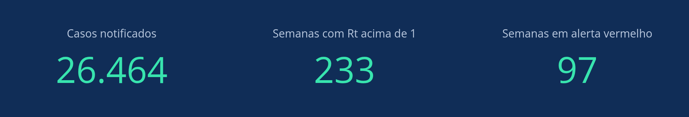
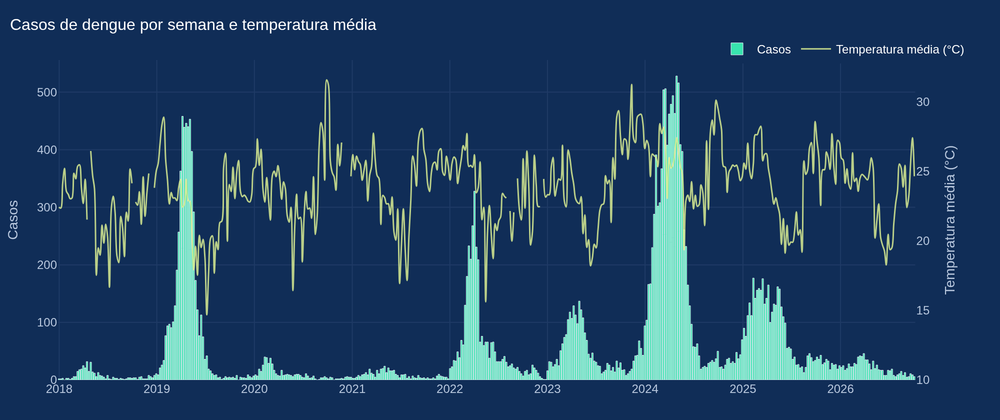
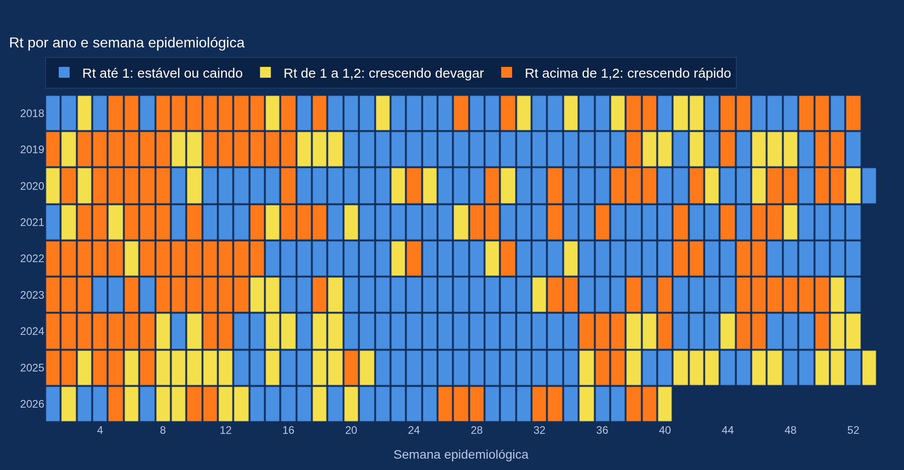
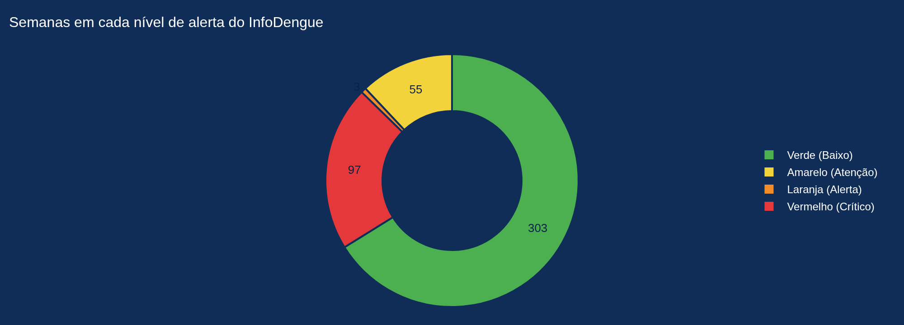
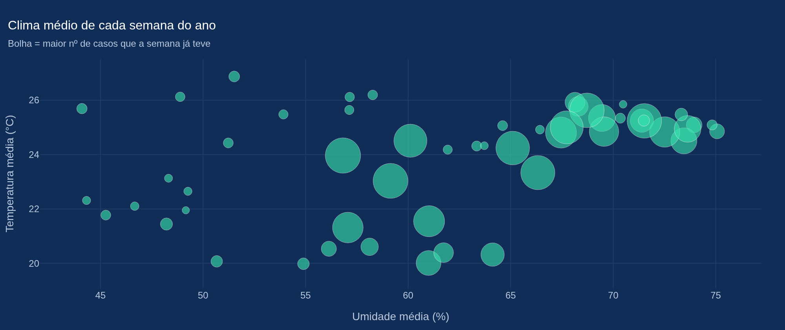

Os números
Dados públicos do InfoDengue, somados por semana. Nenhum dado de paciente.
O resumo

Quer filtrar por período e ver o valor de cada semana? Abra o painel interativo
A dengue volta todo ano
Todo ano o número de casos sobe a partir de fevereiro e chega ao pico entre março e maio, na época mais quente e chuvosa. Fora dessa época, os casos quase somem.

O sinal aparece antes do pico
O Rt diz quantas pessoas cada doente infecta. Acima de 1, a transmissão está crescendo. Nos anos de epidemia, o Rt passou de 1 já em janeiro, de 13 a 17 semanas antes do pico. Em Olímpia, em 2024, ele ficou acima de 1 desde a primeira semana do ano, e o pico veio só na semana 18.

O sinal chega cedo, mas sozinho ele não diz o tamanho da epidemia: o Rt também passa de 1 em anos calmos. Por isso o FAROL junta o Rt com o histórico da cidade e o clima.
Mas nunca do mesmo tamanho
A época se repete, o tamanho não. Repetir o plano do ano passado não funciona, porque ninguém sabe de antemão se o próximo verão vai ser calmo ou de epidemia.
| Ano | Olímpia/SP | Itanhaém/SP | Viçosa/MG |
|---|
Em destaque, o pior ano de cada cidade. 2026 vai até a semana 40 (início de outubro).

O clima dá o contexto
As semanas com mais casos são, em média, um pouco mais quentes e úmidas que as outras. Em Olímpia, as 10% com mais casos tiveram 24,7 °C e 67% de umidade, contra 23,8 °C e 61% no geral. É uma associação fraca, não uma previsão sozinha: o clima entra na conta junto com o histórico e o Rt.

Por que isso importa
- Se a vigilância souber cedo que o ano vai ser de epidemia, dá tempo de reforçar o controle de vetores e a rede de saúde antes do pico.
- A equipe de campo é pequena para a cidade inteira. Na epidemia, ela precisa de uma fila de visitas por prioridade.
- O problema é o mesmo em cidades diferentes. Um sistema que funciona com dado público serve para qualquer município.